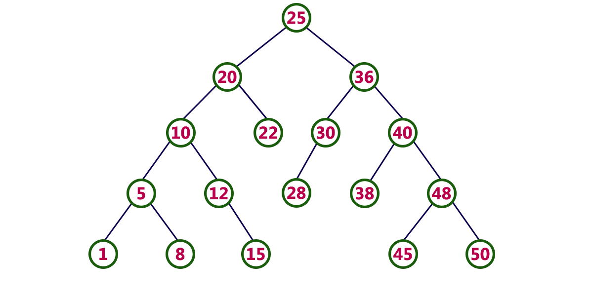

Binary search trees are able to efficiently traverse data
They are able to do all of the following:
- Ability 1: insert a key value with little to no effort
- Ability 2: determine whether a key value is in the tree
- Ability 3: remove a key value from the tree with little effort
- Ability 3: print all of the key values in sorted order
